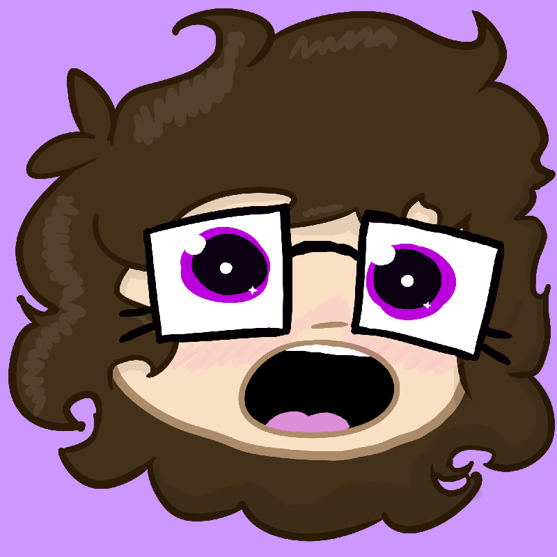
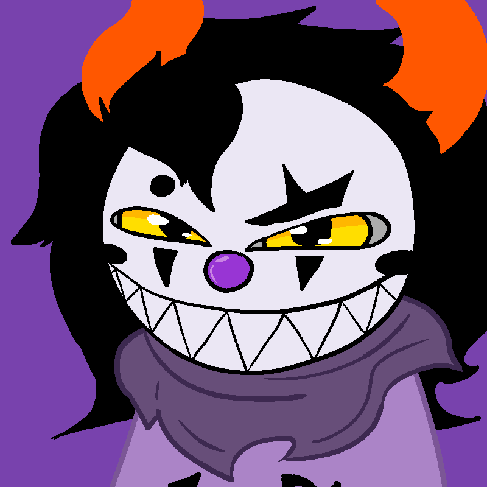
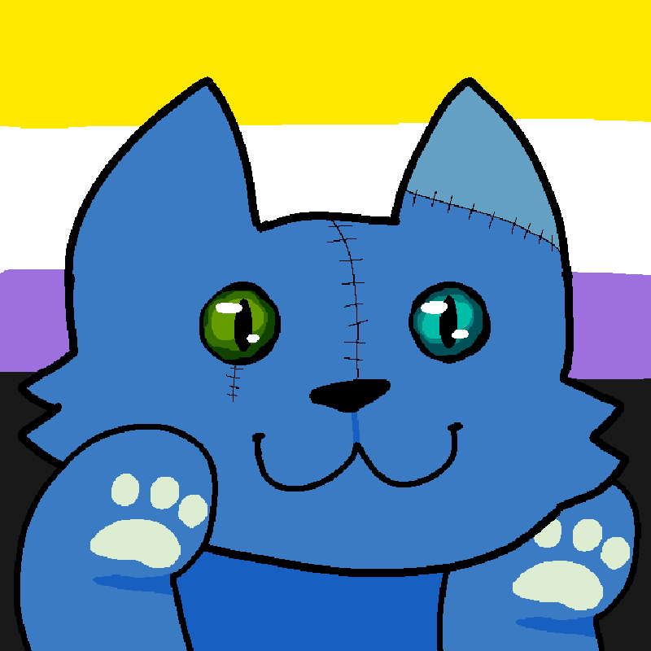
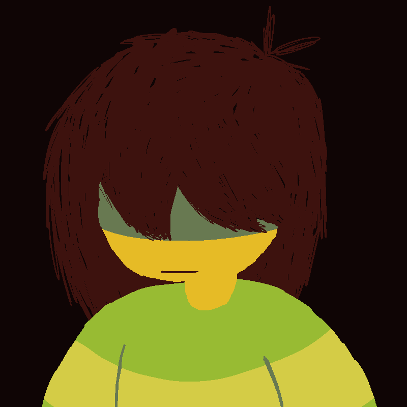
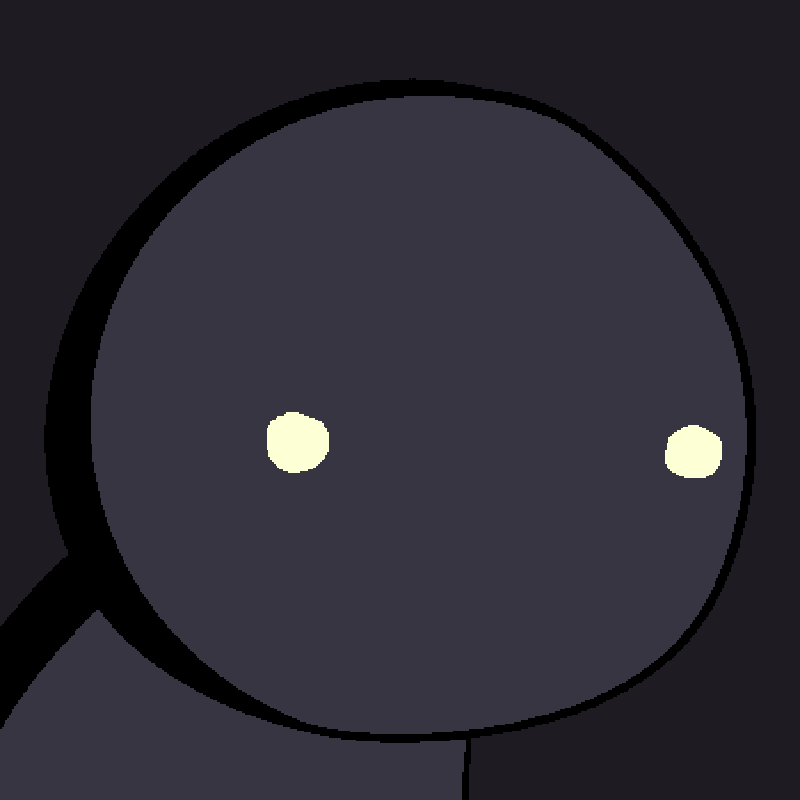
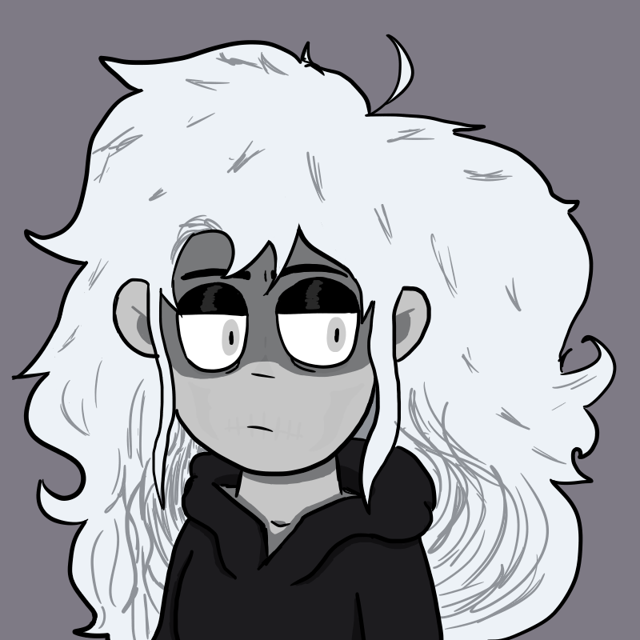
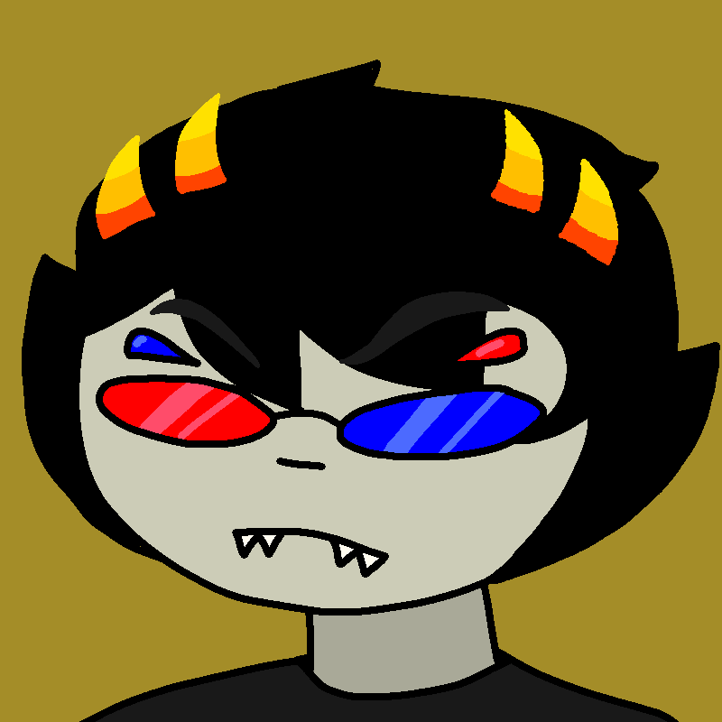

We are the Candy System, a transfem OSDD collective with Autism and Attention Deficit Hyperactive Disorder (ADHD). Our birthdate is the 6th of January, 2002.
Current Host: Nepeta
To view each system member's icon at full resolution, click on it. You cannot do this with the temporary pending images.
Addie

Mental Age: Same as the body's
Pronouns: She/Her or Py/Pyths
Description: Nonbinary Snakegender Girl, and the Core of the system (The "original" person). Currently dormant.
Source: N/A
Roxy
Mental Age: 19
Pronouns: She/Her or They/Them
Description: Transfem Enby Girl. Games a lot.
Source: Homestuck
Dave
Mental Age: 23
Pronouns: Any
Description: Cool dude. Makes music.
Source: Homestuck
Rose
Mental Age: Same as the body's
Pronouns: She/Her
Description: Eldritch Trans Woman. Fan of the Dark Arts.
Source: Homestuck
Jaradi

Mental Age: Same as the body's
Pronouns: She/Her, It/Its, or Py/Pyths
Description: Snakegender Clown Troll Girl. Struggles with forming sentences.
Source: Homestuck (Fan Character)
Nepeta

Mental Age: Same as the body's
Pronouns: It/Its
Description: Silly little kitty plush! Enjoys roleplay and gaming.
Source: Homestuck
Kris

Mental Age: 18
Pronouns: They/Them
Description: Nonbinary Human. Has source memories, blocks out most system-shared memories. Sometimes puts apostrophes where they shouldn't be because they think it's funny.
Source: Deltarune
Chara
Mental Age: 11 ("and a half")
Pronouns: They/Them or It/Its
Description: Nonbinary child with a dislike for the human race. Has source memories, blocks out most system-shared memories.
Source: Undertale
Vriska
Mental Age: 22
Pronouns: She/Her
Description: "8luh 8luh huge 8itch". Spidery.
Source: Homestuck
Esae

Mental Age: N/A
Pronouns: They/Them
Description: Agender Living Shadow.
Source: Darkshade
Destiny

Mental Age: N/A
Pronouns: She/Her or They/Them
Description: Trans Woman. The personification of Death. Former Paranormal Investigator. Has source memories.
Source: Darkshade, It Started With Death
Reigen
Mental Age: 28
Pronouns: He/Him
Description: "Number 1 Psychic of the 21st Century".
Source: Mob Psycho 100
June
Mental Age: 20
Pronouns: She/Her
Description: "ultimate prankster girl! fan of ghostbusters and the supernatural, and also this cool rock i found on the ground :B"
Source: Homestuck
Jade
Mental Age: 18
Pronouns: She/Her
Description: Transfem Puppy Girl. Cheery, but can be passive aggressive sometimes.
Source: Homestuck
Asriel
Mental Age: 12
Pronouns: He/Him
Description: "God of Hyperdeath".
Source: Undertale
Hydra
Mental Age: 17
Pronouns: She/Her or It/Its
Description: Full of fury. Always angry, even when happy.
Source: Homestuck
Sans
Mental Age: 27
Pronouns: He/Him
Description: "sans."
Source: Undertale
Dr. Georgia Unn
Mental Age: 32
Pronouns: She/Her
Description: "Don't talk to me before I've had my Coffee. Refer to me as Dr. Unn or Ms. Unn unless the system is friends with you."
Source: Darkshade
Aradia
Mental Age: Same as the body's
Pronouns: She/Her
Description: Morbidly cheerful. "agender asexual and adventur0us! w0rld sucks so why b0ther being sad ab0ut it? w0nt it be fun t0 watch it all crash d0wn?"
Source: Homestuck
Karkat
Mental Age: Same as the body's
Pronouns: He/Him or She/Her
Description: Easily angered, prone to blaming himself for minor mistakes and slip-ups.
Source: Homestuck
Hira
Mental Age: 14
Pronouns: She/Her or It/Its
Description: "7uhh idjdk what to puut h3re"
Source: N/A
Sollux

Mental Age: Same as the body's
Pronouns: He/Him, She/Her, or It/Its
Description: Moody lo2er failboy
Source: Homestuck
{kind=link}
{kind=link}
{kind=link}
{kind=link}
{kind=link}
{kind=link}
{kind=link}